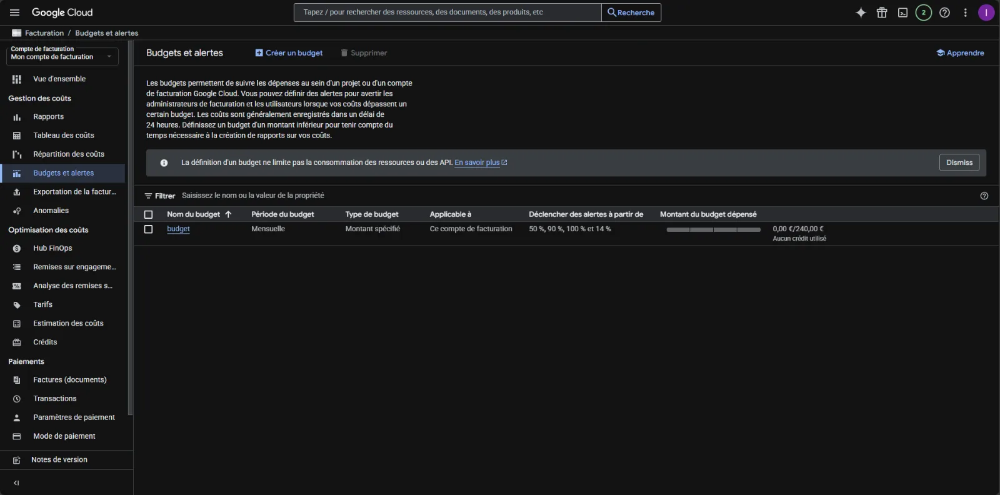
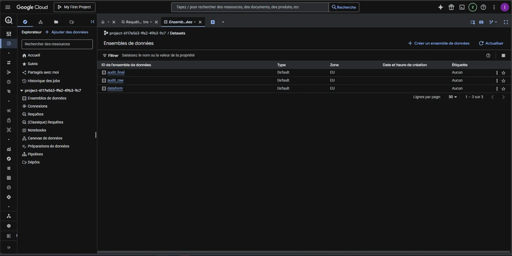
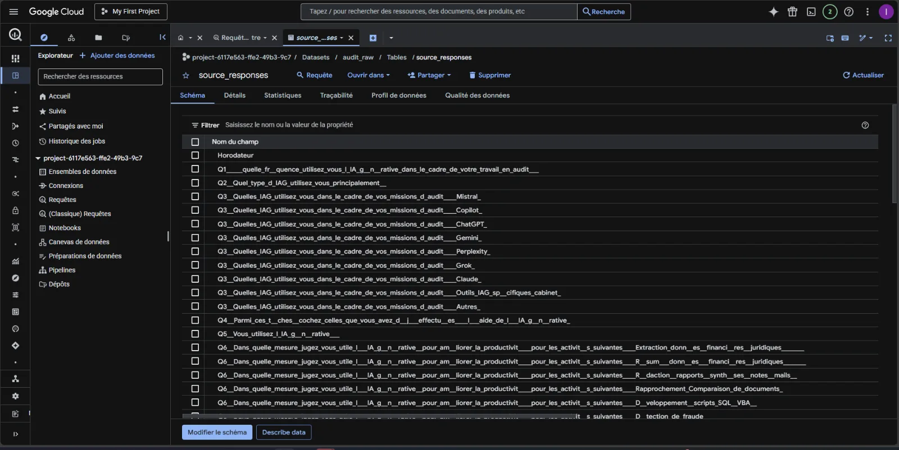
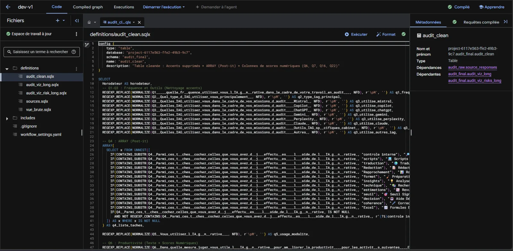
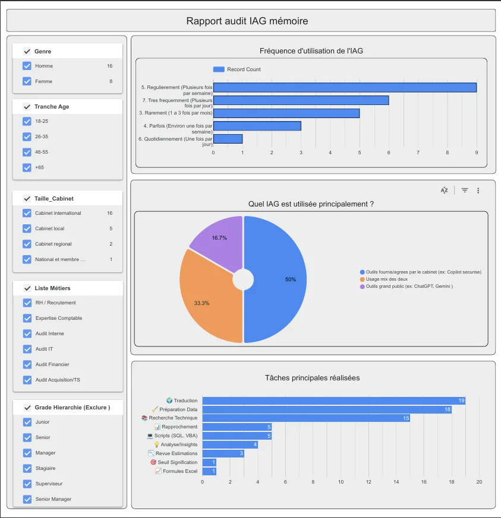
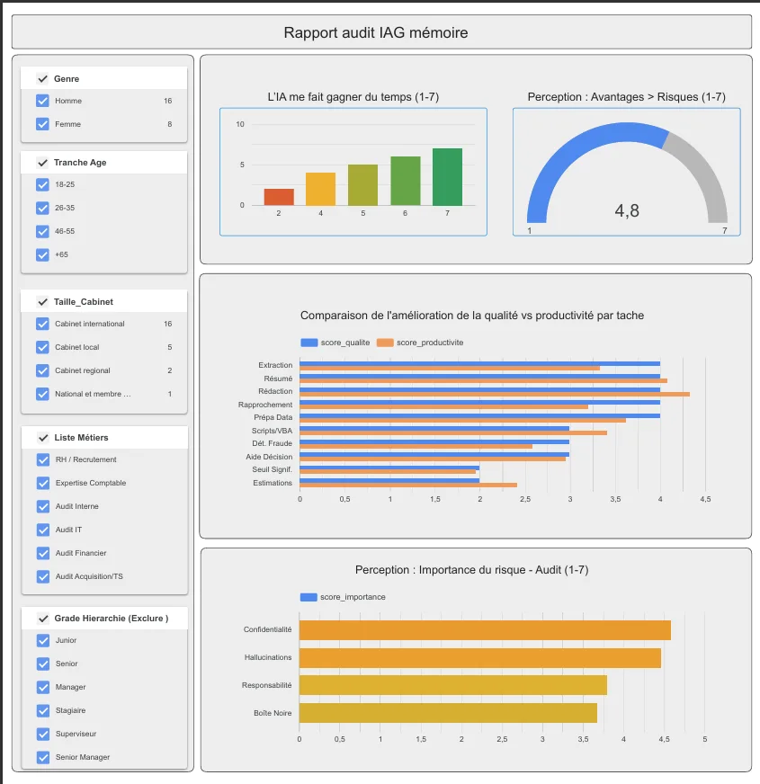

Présentation du Projet
Thème : Analyse automatisée de la perception de l'Intelligence Artificielle Générative (IAG) en cabinet d'audit.
Objectif : Mise en œuvre d'une architecture Cloud pour transformer des données brutes de questionnaire en indicateurs visuel clairs et exploitables.
Solutions Techniques
- Infrastructure Cloud (GCP) : Déploiement sur Google Cloud avec paramétrage de facturation et alertes budgétaires pour la maîtrise des coûts.
- Ingestion de Données : Flux automatisé entre Google Sheets (réponses Google Form) et BigQuery dans un dataset
audit_raw. - Transformation (Dataform) : Développement de scripts SQLX pour le nettoyage, le calcul de scores et le traitement des données.
- Modélisation : Création de vues pivotées au format long via la fonction
UNNEST. - Automatisation : Configuration de l'ordonnanceur Dataform pour la mise à jour automatique.







1 / 7
Gestion de la facturation Cloud
Mise en place d'alertes budgétaires sur GCP pour garantir une utilisation sécurisée des services.